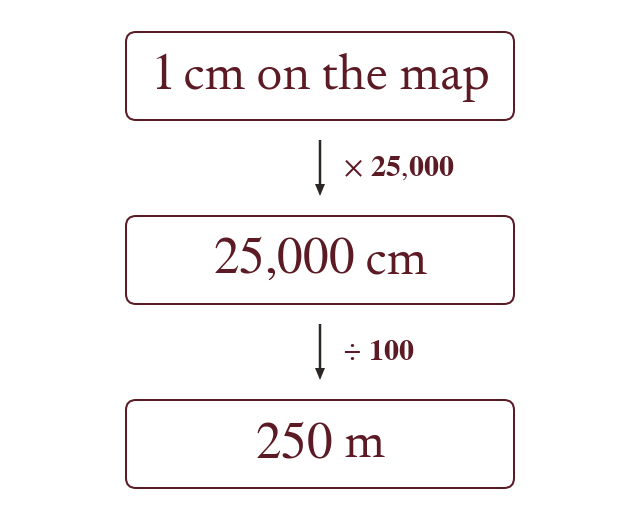
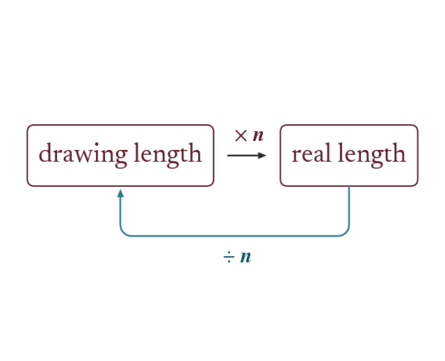
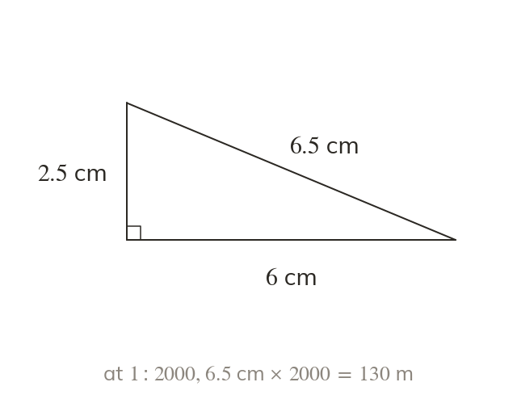
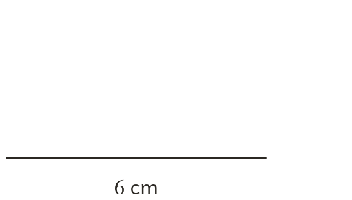
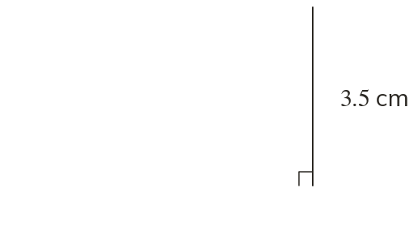
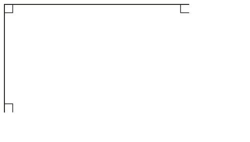
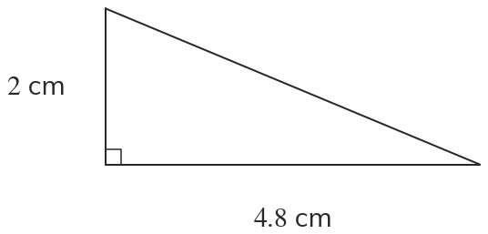
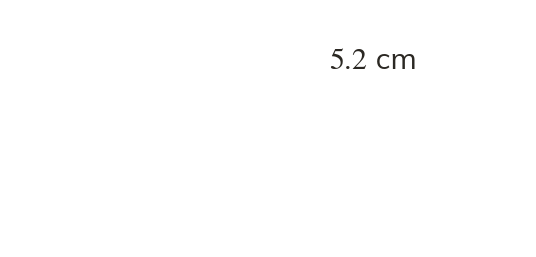

One unit stands for n
A scale of : n means drawing unit is n real units. So on a : map, cm is m.
A scale of : n means unit on the drawing stands for n of the same unit in real life. On a : map, cm stands for cm, which is m.
A map shrinks a whole county onto one sheet, and an architect draws a house before it is built. Both work only because every length is shrunk by the same scale.
Work down the page at your own pace. Write every answer in your book first, then click to check it.
Read each card, then follow the worked examples one step at a time.

A scale of : n means drawing unit is n real units. So on a : map, cm is m.

Real length = drawing length × and drawing length = real length ÷ The two are inverse operations, and the units match before either is used.
Pick an answer. If it's wrong, the feedback tells you which mistake it was.
Read each card, then follow the worked examples one step at a time.
A scale drawing divides every real length by the same So it is the same shape as the real thing. Angles are not scaled.

Convert each real length first. Draw from the on the ruler. Multiply a measured length by n to get the real length.





Pick an answer. If it's wrong, the feedback tells you which mistake it was.
Finished? Next lesson: 10.12.3 Converting Area and Volume Units.
Log in, then search for a code to practise that skill.